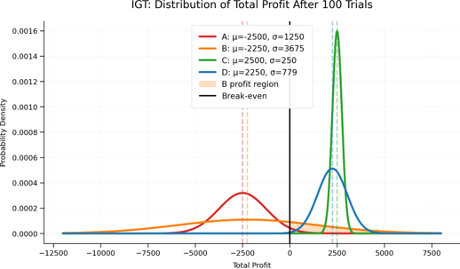
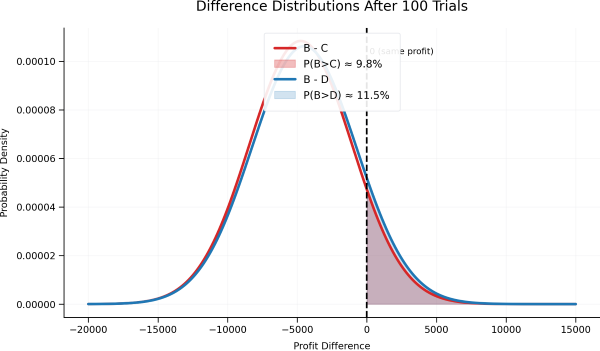

この課題では、4つのデッキ（A、B、C、D）から100回カードを選択しました。 目的は、限られた経験から長期的に有利な選択肢を見つけられるかを調べることです。
参加者は各デッキの仕組みを事前には知らず、 実際の勝ち負けを経験しながら学習していきます。
今回の課題では、各デッキを以下の確率分布として整理できます。
| デッキ | 結果 |
|---|---|
| A | 50%で +100、50%で -150 |
| B | 90%で +100、10%で -1125 |
| C | 50%で +50、50%で 0 |
| D | 90%で +50、10%で -225 |
各デッキの特徴は、 平均的にどれくらい得をするかを示す「期待値」と、 結果のばらつきを示す「標準偏差」で整理できます。
| デッキ | 期待値(EV) | 標準偏差(SD) |
|---|---|---|
| A | -25.0 | 125.0 |
| B | -22.5 | 367.5 |
| C | +25.0 | 25.0 |
| D | +22.5 | 77.9 |
期待値を見ると、CとDは長期的に利益が出る有利なデッキで、 AとBは損失が出る不利なデッキです。 CとD、AとBは、それぞれ近い期待値を持っています。
期待値だけを基準にすれば、 Bは選ぶべきではないデッキです。 しかし、実際にカードを引いたときの印象は、 期待値から分かる有利・不利とは異なります。
Deck B では、90%の確率で +100 が得られます。 大部分の試行で勝つ経験が続くため、 「このデッキは良いデッキだ」 と感じやすくなります。
100試行すべてで同じデッキを引いた場合、 理論上の平均最終利益は以下のとおりです。
| デッキ | 平均最終利益 |
|---|---|
| A | -2500 |
| B | -2250 |
| C | +2500 |
| D | +2250 |
この平均結果でも、 CとDでは利益が出る一方、 AとBでは損失が出ることが分かります。
図：利益分布グラフ

Deck B だけを100回引いた場合でも、 最終的にプラス収支で終わる確率は約44%あります。 長期的には不利であっても、 実際に勝って終わる人はかなり存在するということです。
Deck B が Deck C より多く稼げる確率は約10%、 Deck D より多く稼げる確率も約11%にとどまります。
つまり、 Deck B で勝って終わることはあっても、 Deck C や D より多く稼げることは少ないのです。 「利益が出ること」と 「他の選択肢より有利であること」は区別する必要があります。
研究者は計算によってCとDが有利だと分かっています。 しかし、参加者は実験中に期待値や標準偏差を計算できず、 直前の勝ち負けを手がかりに判断します。 そのため、頻繁に成功する Deck B が魅力的に見えるのです。
この課題は、 単に「正解のデッキを選べるか」を測定するものではありません。 頻繁な成功、まれな大失敗、長期的な利益、不確実性を、 どのように評価するかを調べています。
言い換えると、 限られた経験から未来をどう予測し、 意思決定するのかを測る課題です。
Deck B は長期的には不利ですが、 多くの試行で利益が得られ、 約44%の人が最終的にプラス収支で終わるため、 魅力的に感じられます。
ただし、 Deck B で利益が出ることと、 他のデッキより有利であることは別です。 Deck C より多く稼げる確率は約10%、 Deck D より多く稼げる確率も約11%にとどまります。
図：C,DとBを比較した時の比分布から見るBの勝率

そのため IGT は、 単なる「運の良さ」ではなく、 不確実な状況でどのような判断基準を用いて意思決定するかを測定する課題 として広く用いられています。